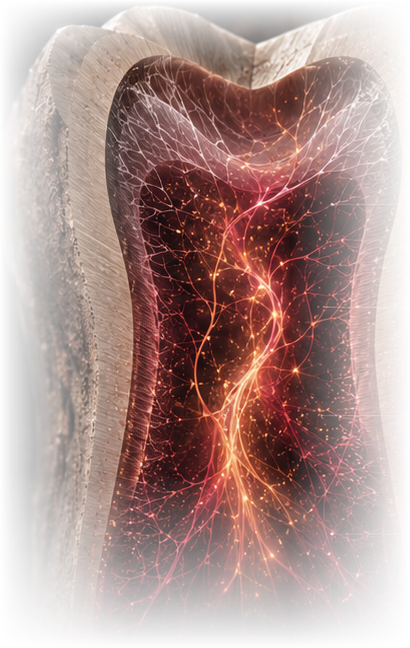
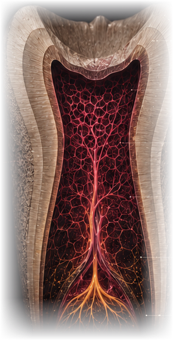

Not a space to fill, but living tissue to bring back.

Helping the tooth grow its living pulp back.
When a tooth loses its pulp, it loses its blood supply and its ability to sense and protect itself. Our work is to grow that living tissue back inside the root — restoring the tooth from within, with its own biology, rather than simply sealing it.
Why a tooth needs its pulp alive.
The living tissue inside a tooth does more than fill space — losing it changes everything.
Once a tooth’s pulp is lost, there is no easy way to bring it back. Today’s treatments rely on a blood clot to fill the canal — but a clot alone struggles to organize into healthy, well-fed tissue along the length of the root.
Guiding cells to rebuild dentin.
We guide cells into the specialized, dentin-building cells of healthy pulp, so they can line the canal wall and lay down new dentin — as they did when the tooth first formed.
Working with the tooth’s real shape.
Every root is different. We build soft scaffolds that fit the canal’s true form and keep the new tissue nourished along its full length — so healthy pulp can grow from the root tip all the way up.
Reading the canal from the outer wall to the root tip.
The new tissue is built to match the tooth’s real shape — the canal is where it grows, and the root tip is its only doorway in.

We build the new tissue to match the tooth’s own outer shape — not a generic tube.
The hard dentin wall holds the space and gives the new tissue its shape.
The hollow space inside the tooth — the pulp chamber and canal — is where the scaffold, cells and blood flow all come together.
At the root tip, a tiny opening is the only way in — the single doorway for nutrients, oxygen and the body’s own blood vessels to reach the new tissue.
Tiny channels we build carry blood flow all the way from the root tip to the top of the tooth, so no part of the new tissue is starved of oxygen.
Matter in conversation with life.
Every material we choose is chosen for how well it works with living cells, fluid and the tooth’s own signals.
From a banked cell to living dentin.
A stored cell, reset to an earlier state, carefully checked, then guided step by step into a dentin-building cell.
Start With Banked Cells
We start with cells taken from a baby tooth or a removed wisdom tooth — a source that would otherwise be discarded, and that grows well in the lab.
Reset the Cells
A brief pulse of genetic signals resets these cells to a more flexible, early state, so they can multiply almost without limit and later become almost any cell type the body needs.
Check the Reset Worked
Before moving forward, we run several checks to confirm each batch of reset cells is genuinely flexible enough to become the cell types we need.
Guide Toward Dentin-Building Cells
We then guide the cells to become dentin-building cells, which line up along the dentin wall the way they did when the tooth first formed.
Deliver Into the Canal
The cells are suspended in a soft, injectable gel and placed into the full length of the cleaned root canal, following its real shape.
Grow a Blood Supply
Over the following weeks, new blood vessels connect to the tooth’s own circulation at the root tip, and the tissue matures into new, living dentin.
The material decides when tissue forms.
From an early rigid proof-of-concept to soft, injectable gels that take the shape of the canal.
PLLA
RigidAn early, rigid version used to prove the concept — showing for the first time that dentin-building cells could form inside a lab-grown scaffold.
Puramatrix
InjectableA soft, injectable gel that takes the shape of the canal as soon as it’s placed. Cells show the first signs of dentin-building activity within about a week — the fastest material we’ve tested.
rhCollagen I
InjectableA material closely related to what the body already uses to build tissue. It’s injectable, and it supports both new blood vessels and cell growth well.
New tissue, grown step by step.
Inside the cleaned root, scaffold, cells, signals and blood flow come together in sequence.
Tissue forming through the canal.
A cinematic five-stage sequence of tissue formation along the full canal length.
A cinematic, scroll-driven five-stage sequence — prepared canal, injectable matrix, cells and matrix cues, vascular integration, dentin-forming interface — with a restrained material legend (matrix, cells, vascular ingrowth, dentin interface) and per-stage constraints and evidence status.
Three kinds of cell, one living tissue.
Dentine-building, blood-vessel and nerve-support cells come together into a single, working pulp.
Dentine-building cells
These cells settle against the dentin wall and begin building new dentin.
Blood-vessel cells
New vessels form and link up with the body’s blood supply at the root tip.
Nerve-support cells
Guiding signals help feeling return to the restored pulp.
Two complementary experimental routes.
Tissue organization across the full canal, and a renewable odontoblast-like cell source — distinct models addressing complementary parts of the regenerative problem.
One integrated scientific figure with two custom illustrations — a full-length root with vascularized tissue and a dentin-forming interface, and a three-state cell-source sequence (dental pulp stem cells, iPSC colony, odontoblast-like differentiation in a dentin-disc model) — converging to a shared pulp tissue-engineering node. No publication cards; one programme link.
Judged by the whole picture, not one test alone.
We look at how the cells reset, specialize, build mineral and connect to blood flow — all together, not one at a time.
Confirms the reset worked — before moving forward, we check that each batch of cells is genuinely capable of becoming any cell type.
A standard lab test where the cells are allowed to grow into several different tissue types — proof that the reset was complete and functional.
Confirms that the seeded cells have taken on the identity of real dentin-building cells.
Confirms new dentin has actually formed along the canal wall, with the same fine tubular structure as natural dentin.
Confirms a network of small blood vessels has formed and linked up with the body’s own blood supply.
Confirms the new tissue is as densely populated with cells and blood vessels as natural, healthy pulp.
The scaffold must fade as new tissue grows in.
If the scaffold breaks down too slowly, it blocks new cells and vessels from moving in. If it breaks down too fast, the structure collapses before blood vessels arrive to support it. We look for the timing where a temporary scaffold hands off smoothly to tissue that can support and feed itself — calculated for each tooth’s own canal shape.
From the bench toward the chairside.
Established in vitro and subcutaneous models; orthotopic, injectable and clinical stages ahead.
In vitro canal model
Full-length human premolar canals, marker onset by day 7–14.
Subcutaneous in vivo
Immunodeficient (CB-17 SCID) model; tubular dentin by day 28.
Orthotopic large-animal
Perfusion and innervation in a physiological jaw environment.
Chairside injectable
A single-visit injectable construct matched to the individual canal.
Clinical translation
First-in-human vascularized pulp regeneration.
Not a fill — a living thing.
We treat the canal like living tissue in the making — shaped by confinement, true anatomy, distance and flow.
The full-length root-canal model.
One editorial evidence panel: the experimental model, what it demonstrated, why it matters, and a quiet link to the paper.
An editorial evidence panel (no dashboard card) — a vertical amber accent, a serif heading, a concise description of the full-length human root-canal model, a why-it-matters note, and a small metadata link to the study. The full citation stays in Published Work.
Where this began.
The peer-reviewed studies this work is built on.
DPSCs reprogrammed via OCT4·SOX2·KLF4·LIN28·L-MYC; iPSC-seeded dentin/PLLA constructs formed odontoblast-like cells 28 d after subcutaneous implantation.
SHED in Puramatrix or rhCollagen I injected into full-length premolar canals generated vascularized pulp-like tissue with tubular dentin.